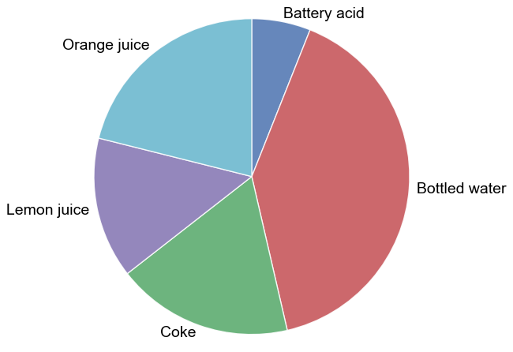

pie¶
- fcp.pie(**kwargs)¶
Pie chart
- Parameters
df (DataFrame) – DataFrame containing data to plot
- Keyword Arguments
x (str) – x-axis column name with categorical data [REQUIRED]
y (str) – y-axis column name with values [REQUIRED]
colors (pie_colors |) – Wedge fill colors. Defaults to fcp.DEFAULT_COLORS. Example: https://endangeredoxen.github.io/fivecentplots/0.5.0/pie.html#colors
counter_clock (pie_counter_clock |) – Places wedges in a counter-clockwise fashion. Defaults to False. Example: https://endangeredoxen.github.io/fivecentplots/0.5.0/pie.html#counter-clockwise
edge_color (pie_edge_color |) – Hex color string for the edge of the pie wedges. Defaults to #ffffff. Example: https://endangeredoxen.github.io/fivecentplots/0.5.0/pie.html#colors
edge_style (pie_edge_style |) – Line style for the wedge edge lines {‘-’, ‘–’, ‘-.’, ‘:’}. Defaults to ‘-’. Example: https://endangeredoxen.github.io/fivecentplots/0.5.0/pie.html#colors
edge_width (pie_edge_width |) – Width of the wedge edge lines in pixels. Defaults to 1. Example: https://endangeredoxen.github.io/fivecentplots/0.5.0/pie.html#colors
explode (pie_explode |) – Emphasize one or more wedges by offsetting it from the center of the pie by some amount. Defaults to None. Example: https://endangeredoxen.github.io/fivecentplots/0.5.0/pie.html#explode
fill_alpha (pie_fill_alpha |) – Transparency value for the bars between 0-1. Defaults to 0.85. Example: None
font_color (pie_font_color |) – Font color for the wedge labels. Defaults to #444444. Example: https://endangeredoxen.github.io/fivecentplots/0.5.0/pie.html#wedge-labels
font_size (pie_font_size |) – Font size for the wedge labels. Defaults to 11. Example: https://endangeredoxen.github.io/fivecentplots/0.5.0/pie.html#wedge-labels
font_weight (pie_font_weight |) – Font weight for the wedge labels {‘light’, ‘normal’, ‘medium’, ‘semibold’, ‘bold’, ‘heavy’, ‘black’}. Defaults to ‘normal’. Example: https://endangeredoxen.github.io/fivecentplots/0.5.0/pie.html#wedge-labels
inner_radius (pie_inner_radius |) – Distance from the center of the pie to the inner edge; used to make donut plots. Defaults to pie.html#donut. Example: nan
label_distance (pie_label_distance |) – Distance from the center of the pie to the category labels. Defaults to 1.1. Example: https://endangeredoxen.github.io/fivecentplots/0.5.0/pie.html#wedge-labels
percents (pie_percents |) – Label each pie wedge with the percentage for that category. Defaults to False. Example: https://endangeredoxen.github.io/fivecentplots/0.5.0/pie.html#labeled-percents
percents_distance (pie_percents_distance |) – Distance from center [0] to edge [pie_radius] at which percentage labels are placed. Defaults to 0.6. Example: https://endangeredoxen.github.io/fivecentplots/0.5.0/pie.html#labeled-percents
percents_font_color (pie_percents_font_color |) – Font color for the percentage labels. Defaults to #444444. Example: https://endangeredoxen.github.io/fivecentplots/0.5.0/pie.html#labeled-percents
percents_font_size (pie_percents_font_size |) – Font size for the percentage labels. Defaults to 11. Example: https://endangeredoxen.github.io/fivecentplots/0.5.0/pie.html#labeled-percents
percents_font_weight (pie_percents_font_weight |) – Font weight for the percentage labels {‘light’, ‘normal’, ‘medium’, ‘semibold’, ‘bold’, ‘heavy’, ‘black’}. Defaults to ‘normal’. Example: https://endangeredoxen.github.io/fivecentplots/0.5.0/pie.html#labeled-percents
radius (pie_radius |) – Sets the radius of the pie chart. Defaults to 1. Example: https://endangeredoxen.github.io/fivecentplots/0.5.0/pie.html#basic-plot
rotate_labels (pie_rotate_labels |) – Rotate the pie labels to align with the bisection line from center of the pie through the wedge. Defaults to False. Example: https://endangeredoxen.github.io/fivecentplots/0.5.0/pie.html#wedge-labels
shadow (pie_shadow |) – Add a shadow to give a 3D appearance to the pie chart. Defaults to False. Example: https://endangeredoxen.github.io/fivecentplots/0.5.0/pie.html#shadow
start_angle (pie_start_angle |) – The angle at which the first wedge starts with [3 o’clock = 0; 12 o’clock =90; etc]. Defaults to 90. Example: https://endangeredoxen.github.io/fivecentplots/0.5.0/pie.html#start-angle
Examples
>>> import fivecentplots as fcp >>> from pathlib import Path >>> import pandas as pd >>> df = pd.read_csv(Path(fcp.__file__).parent / 'tests/fake_data_bar.csv') >>> df.loc[df.pH < 0, 'pH'] = -df.pH >>> fcp.pie(df, x='Liquid', y='pH', filter='Measurement=="A" & T [C]==25')
